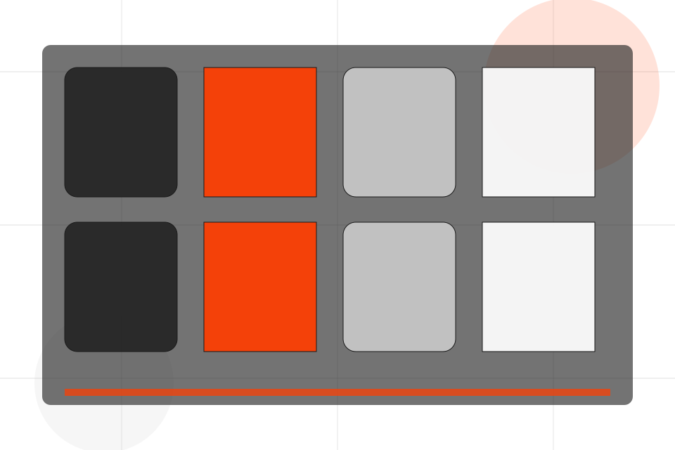
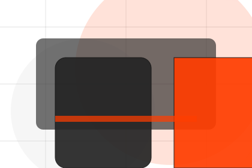
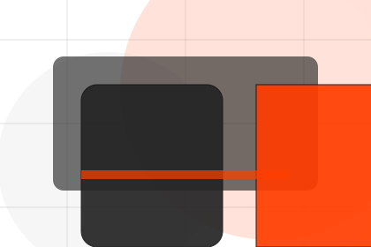
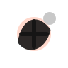
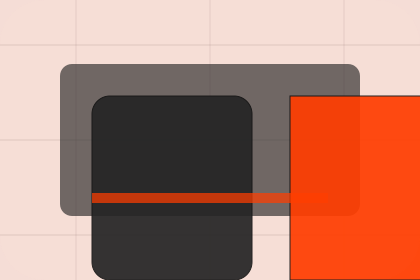

Classes / 01
Classes by Pulse
Classes shaped for sports, fitness & recreation decisions.
Classes opens as a clear sports decision hub: what Pulse offers, who it helps, why it matters, and which route to take first.
The first screen combines positioning, proof, primary action, and fast internal navigation, so people can act immediately or compare the rest of the classes route with context.
Sports scopeCompare optionsRequest advice

Classes / 02
Group
Group adds professional context to the classes route, using the athletic product-program system structure to support progress and belonging before visitors choose a next step.
Pulse uses performance program cards and focused copy to make the decision easier to scan, aligning the section with progress and belonging rather than filling space.
Explore ClassesPulse structures group around context, judgment, and a clear next route so visitors can compare the block quickly before they join a class.
Join ClassClasses / 04
Online
Online adds professional context to the classes route, using the athletic product-program system structure to support progress and belonging before visitors choose a next step.
Pulse uses performance program cards and focused copy to make the decision easier to scan, aligning the section with progress and belonging rather than filling space.
Explore ClassesContext
Online gives the page a specific angle instead of repeating the navigation label.
Judgment
The performance program cards show what to compare, what to avoid, and what matters most for sports, fitness & recreation visitors.

Direction
The final cue points to a useful internal route so the section keeps the journey moving.
Classes / 05
Levels
Levels adds professional context to the classes route, using the athletic product-program system structure to support progress and belonging before visitors choose a next step.
Pulse uses performance program cards and focused copy to make the decision easier to scan, aligning the section with progress and belonging rather than filling space.
Explore ClassesLevels gives the page a specific angle instead of repeating the navigation label.
The performance program cards show what to compare, what to avoid, and what matters most for sports, fitness & recreation visitors.
The final cue points to a useful internal route so the section keeps the journey moving.
Classes / 07
Equipment
Equipment adds professional context to the classes route, using the athletic product-program system structure to support progress and belonging before visitors choose a next step.
Pulse uses performance program cards and focused copy to make the decision easier to scan, aligning the section with progress and belonging rather than filling space.
Explore ClassesPulse structures equipment around context, judgment, and a clear next route so visitors can compare the block quickly before they join a class.
Join ClassClasses / 08
Benefits
Benefits defines the better state Pulse is built to create, with enough detail to make the promise believable.
A fitness site with athlete-scale hero, program cards, coach proof, schedule filters, and membership CTAs. The section grounds that direction in concrete benefits, visible tradeoffs, and a next route visitors can use when the promise feels relevant.
Explore Classes
Better State
Benefits defines what becomes clearer, easier, or safer when Pulse is the chosen route.

Classes / 09
Booking
Booking makes the contact path concrete: what to send, how the response works, and what Pulse needs before visitors join a class.
The section reduces contact friction by naming the channel, expected detail, privacy path, and response expectation instead of dropping visitors into a generic form.
Join ClassPulse keeps booking practical: send the key details, choose the right contact route, and know what kind of reply to expect.
Join ClassClasses / 10
Join Class
Pulse closes the classes route with a clear action, a quick reminder of the value, and a low-friction way to join a class.
Visitors who are ready can use the primary action. Visitors who are still comparing can scan the section links, proof, and support routes before they join a class.
Join ClassThe final block keeps the choice simple: act now, compare one more proof route, or send enough detail for a focused response.
Join Classprogress and belonging
Join Class
A fitness site with athlete-scale hero, program cards, coach proof, schedule filters, and membership CTAs. Classes ends with a direct path to join a class, plus enough context for visitors who still need to compare.

Join ClassNotes
Fitness guidance should be adapted to health status and professional advice where needed.